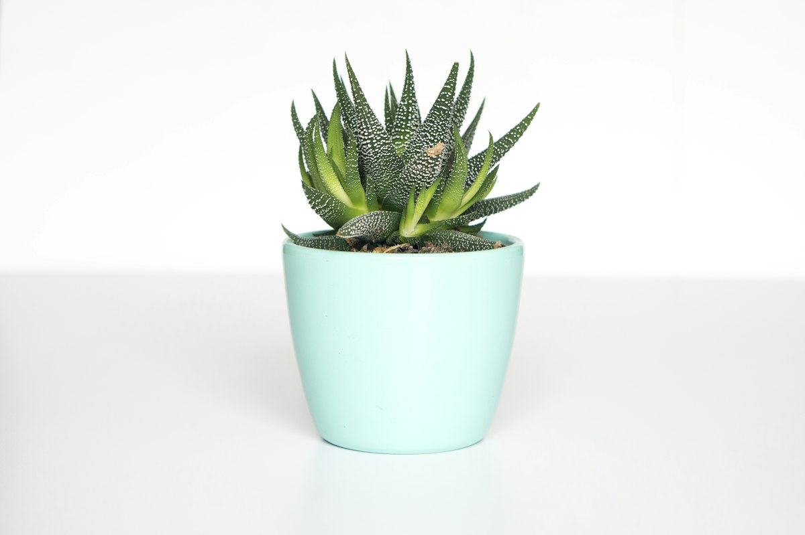
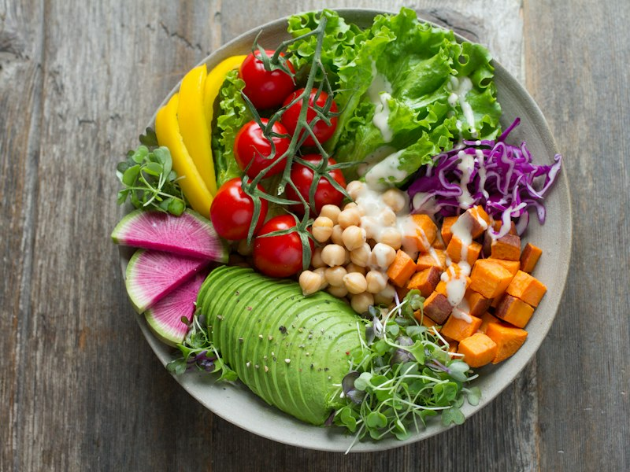
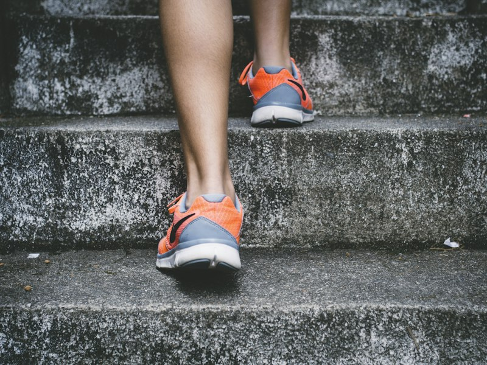
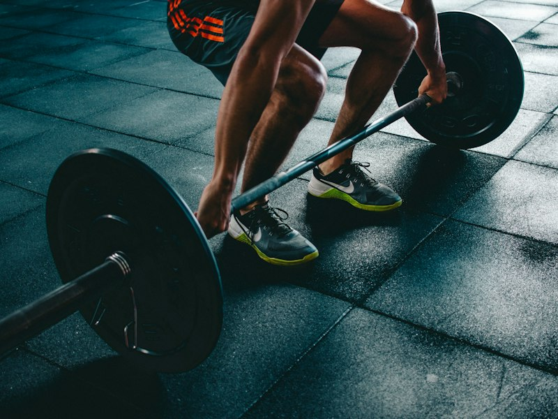

Nutrición completa
Calorías, macros y micronutrientes. Busca alimentos, escanea códigos de barras, guarda recetas y planifica tus comidas.
Energía · Enfoque · Progreso
Registra lo que comes, cómo te mueves y cuánto levantas. MOVE junta todo en un solo lugar y te ayuda a entenderlo, sin juicios.
Quiero probar MOVE
Calorías, macros y micronutrientes. Busca alimentos, escanea códigos de barras, guarda recetas y planifica tus comidas.
Pasos, caminatas y running junto a tus rutinas de fuerza: registra series, kilos y RIR, y detecta tus récords personales.
Peso, medidas y tendencias con objetivos que se ajustan a tus datos reales. Estimaciones claras, nunca puntajes.



"Por fin entiendo por qué mi peso sube y baja. MOVE me muestra tendencias en lugar de hacerme sentir mal por un día."
"Registro mis series en el gimnasio sin señal y todo se sincroniza después. Ver mis récords me motiva."
"Escaneo el código de barras y listo. Planificar mis comidas de la semana me toma cinco minutos."
No. MOVE funciona en el navegador de tu celular o computadora, y puedes agregarla a tu pantalla de inicio como una app.
Sí. Puedes registrar tus comidas y entrenamientos sin conexión; se sincronizan cuando vuelves a estar en línea.
Nunca. MOVE registra y te da contexto: no usa puntajes, rachas obligatorias ni lenguaje de culpa.
Sí. Solo tú puedes ver tus registros, y puedes exportarlos o borrar tu cuenta cuando quieras.